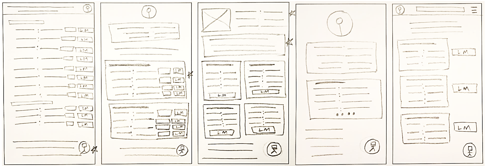
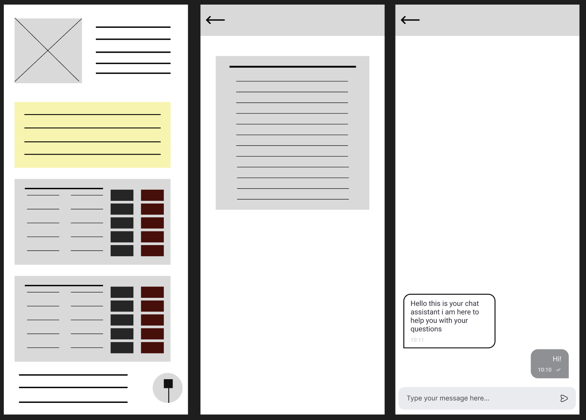

My Health Story
Overview
Patients receive critical health data in formats (typically PDFs) that are dense, full of medical jargon, and lack historical context. This project redesigns the medical report experience to empower patients by transforming confusing data into a personal, intuitive, and understandable health narrative.
My Role: UX/UI Designer
Timeline: 6 Weeks
Tools: Figma, FigJam, Google Forms
Process: Empathize -> Define -> Ideate -> Prototype -> Test
The Problem
For millions of patients, receiving lab results is a confusing and anxious experience. They are often given a static PDF filled with medical jargon, acronyms, and a wall of numbers. There is no context, no clear explanation, and no easy way to track progress over time. This design creates a barrier to understanding, leaving patients feeling disempowered and dependent on their doctor for every explanation.
The Solution
"My Health Story" is a mobile application concept that reframes lab results. It translates complex medical data into a simple, visual, and understandable experience. The app provides plain-language summaries, visualizes health trends over time, and allows users to explore their data, empowering them to become active participants in their own health journey.
Phase 1: Empathize - Understanding the User
Before I could design a solution, I had to understand the real-world frustrations of the people receiving this data. I conducted user research to build a foundation of empathy, which led to the creation of three distinct personas.
User Research
I started with 5 user interviews with individuals who regularly manage a chronic condition. Key insights included:
- Users felt "data rich but information poor."
- The most important thing was seeing trends over time, not a single data point.
- "Normal" ranges on reports felt absolute and scary if a result was barely outside the line.
User Personas
These personas represent the key user groups and their conflicting needs:
- John (The Time-Crunched Businessman): "I’m busy. I just want to know if I'm okay or not in 10 seconds."
- Chris (The Motivated Manager): "I'm putting in the work. I just wish my data would tell me if it's working."
- Reena (The Detail-Oriented Developer): "My doctor only talks about my iron. I want to know what everything else on this report means."
Phase 2: Define - Focusing the Problem
With a clear understanding of the users, I mapped out their current experience and synthesized their needs into actionable problem statements.
User Journey Maps
I mapped the typical, frustrating journey for each persona. This revealed key moments of failure in the current system:
- John's journey showed a need for a scannable, mobile-first summary.
- Chris's journey highlighted the frustration of not being able to compare his current results to previous ones.
- Reena's journey exposed a dead-end when it came to understanding the data, forcing her to Google complex medical terms.
Problem Statements
These user needs became the guiding principles for my design:
- For John: He needs a way to get quick, clear insights from his results on his own schedule.
- For Chris: He needs a way to easily compare lab results over time to see if his efforts are making an impact.
- For Reena: She needs a way to understand the meaning behind all the numbers in her report, not just the highlights.
Phase 3: Ideate & Prototype - Building the Solution
I progressed from brainstorming to building, letting my research guide the design.
Low-Fidelity Sketches
I started with rapid paper sketches to explore different layouts. This helped me establish a clear information hierarchy, balancing the needs of all three personas: a summary at the top (for John) with detailed cards below (for Chris and Reena).
Digital Wireframes
I translated these sketches into digital wireframes in Figma. This blueprint focused on structure and flow, establishing the core components: a summary card, grouped metric cards, "Learn More" buttons, and a chatbot for support.
Wireframes
Based on the research, I focused on a "timeline" as the main dashboard. Low-fidelity wireframes explored how to display different "events" (like lab results, symptoms, or doctor visits) on a single, scrollable feed.
Usability Testing
I conducted moderated usability tests with 3 users using a Figma prototype. The main feedback was that users wanted to "tap" on a data point to get more context. The original design hid this context, so I iterated to create a "tap-to-expand" card system, which tested much better.
Final Designs
The final high-fidelity design uses a soft, encouraging color palette (not the red/blue of this portfolio!) and clear typography. Data is presented in context, and complex terms include a "translate" button to show a simple explanation.
What I Learned
This project was a deep dive into empathy. The key takeaway was that in health tech, clarity and context are not just features—they are the entire product. Removing anxiety for the user was the most important design metric. I also learned the power of quick iteration based on usability testing; the "tap-to-expand" feature, which became central to the design, only emerged after seeing users struggle in the first test.